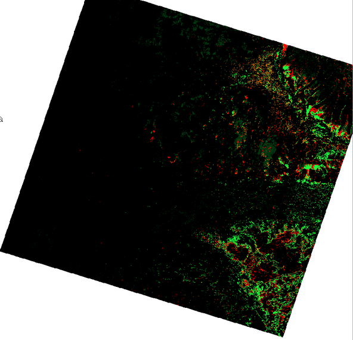
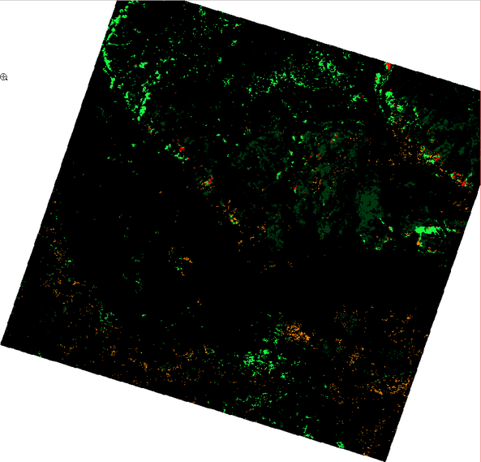
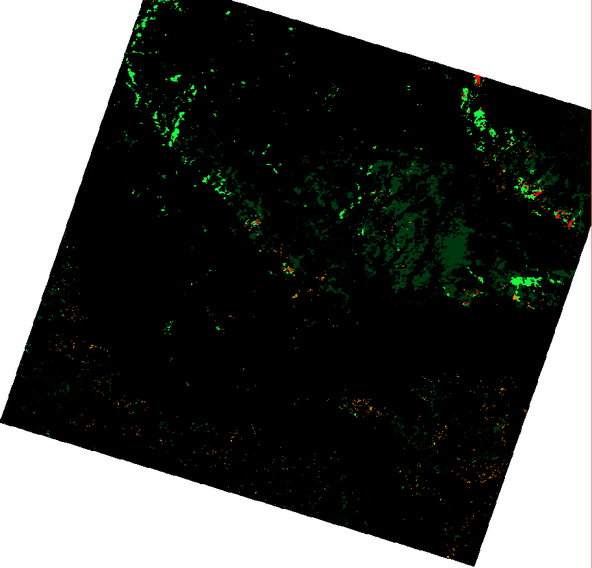

class: center, middle # Identification of types of vegetation cover using recontructed MODIS NDVI phenologies ### Dmitry Kolesov, Ilya Filippov --- # Contents ### 1. Overview ### 2. Methods ### 3. Implementation and results ### 4. Technical details --- # Goal To increase the quality of identification of <<difficult>> types of vegetation using time series of remote sensing data. # Objectives * To reconstruct seasonal change of NDVI (noise removal). * To classify vegetation types using cleaned-up NDVI series. * Assess the accuracy of the classification of <<difficult>> vegetation types. # Hypothesis Different types of vegetation have different phenologies that are reflected by NDVI curves. ??? Рассказать о начальной суперцели -- поиску уникальных местообитаний; Уникальное местообитание - местообитание с редкими природными условиями. Они косвенно отображаются в спектральных характеристиках участка. Для поиска таких мест нужно определить небольшие по площади отличающиеся от общей массы участки. В случае анализа исходных снимков такие участки приходятся не на действительно уникальные места, а на участки снимка с тенями, неоднородностью атмосферы и т.п. Существуют классы, которые трудно дешифрируются по единовременному снимку, тогда мы берем несколько снимков, чтобы уловить динамику, но тогда шумы от нескольких снимков "всплывают" и шумы мешают еще больше. Отсюда возникает задача очистки ДЗЗ от шумов --- ## Classic approach to identify vegetation types using RS data .center[  ] .center[Averaged characteristic curves for different objects.] .small[ * Different objects look different in different spectral bands and imaging in several bands can give more information. * Each pixel with coords `\((x,y)\)` can be represented by a vector is brightness of each separate image: `$$ \overline{P}(x,y) = \{b_1(x,y), b_2(x,y), \dots, b_n(x,y) \} $$` где `\(\overline{P}\)` - brightness vector, `\(b_i(x,y)\)` - brightness value in band `\(i\)` at the point with coordinates `\((x,y)\)`. ] ??? Кратко рассказать о том, как производится классификация ДЗЗ на основе мультиспектральных данных. --- ## NDVI .small[NDVI (Normalized Difference Vegetation Index) normalized difference vegetation index - simple quantitative measurement of amount of photosynthetically active biomass.] .left-column[ ### Sample values .small[ | Type of object | NDVI value | |-------------|:--------------:| | Dense vegetation | 0.7 | | Sparse vegetation | 0.5 | | Bare ground | 0.025 | | Clouds | 0 | ] ] .right-column[ .small[ NIR - reflectance in near infra-red spectra, RED - reflectance in near infra-red spectra: `$$ NDVI = \frac{NIR - RED}{NIR + RED} $$` ] ] .center[  ] .center[.small[Characteristic parts of the averaged curve of vegetation reflectance] .footnote[(http://gis-lab.info/qa/ndvi.html)]] --- # Pros and cons of one-time images ## Pros * Methods are well-studied. * Easier to interpret data. ## Cons * Each image is made under unique conditions (geometry of Sun-Earth-Satellite system; atmospheric conditions; changes on the ground) => <<good>> parameters for analysis on one image won't be optimal for another. * As atmosphere is heterogeneous same objects will look different in different parts of an image. * Different objects can look the same. ??? О том, что не хорошо в использовании одномоментных снимков. --- # Using time series ## Pros * Posibility to analyze the form of the curve of seasonal changes; * Posibility to filter out noises due to atmosphere and other conditions; ## Cons * Time series are available only with low resolution; * Complicated interpretation. ??? О том, что вообще появляется такая возможность -- использовать множество снимков на одну территорию (Landsat, MODIS и т.д.) -- накоплены многолетние ряды данных --- .center[  ] Sample «raw» NDVI series, extracted from MOD13 for: 1 - bogs forested with birch; 2 - burns regrown with birch. --- .center[  ] Sample NDVI series after removing high-frequency components for: 1 - bogs forested with birch; 2 - burns regrown with birch. --- ## Separability of classes by FFT coefficients .center[  ] Sample separability by first FFT coefficients for: 1 - bogs forested with birch; 2 - burns regrown with birch. --- ## Example of one-time multispectral image .center[  ] --- ## Image classification into 18 classes .center[  ] --- ## Image classification focusing on "difficult classes" .left-column[ ###Оценка точности классификации .small[ Cats | Kappa (по классам) -----|:---------: "Easy" classes | 0.323157 Bogs covered with pine | 0.663677 Bogs covered with birch | 0.406724 Mesotrophic bogs 1 | 0.801587 Mesotrophic bogs 2 | 0.668466 Kappa (for the whole image) **0.51** ] ] .right-column[ .center[  ] ] --- ## Classification by first 3 Fourier coefficients .left-column[ ###Classification accuracy assessment .small[ Cats | Kappa (by class) -----|:---------: "Easy" classes | 0.472705 Bogs covered with pine | 0.373516 Bogs covered with birch | 0.791791 Mesotrophic bogs 1 | 0.341439 Mesotrophic bogs 2 | 0.798712 Kappa (for the whole image) **0.52** ] ] .right-column[ .center[  ] ] --- ## Classification by first 5 Fourier coefficients .left-column[ ###Classification accuracy assessment .small[ Cats | Kappa (by class) -----|:---------: "Easy" classes | 0.634187 Bogs covered with pine | 0.460223 Bogs covered with birch | 0.716393 Mesotrophic bogs 1 | 0.571429 Mesotrophic bogs 2 | 0.817011 Kappa (for the whole image) **0.64** ] ] .right-column[ .center[  ] ] --- ## 5 meaningful Fourier coefficients plus multispectral bands .left-column[ ###Classification accuracy assessment .small[ Cats | Kappa (by class) -----|:---------: "Easy" classes | 1.000000 Bogs covered with pine | 0.327354 Bogs covered with birch | 0.682927 Mesotrophic bogs 1 | 0.761905 Mesotrophic bogs 2 | 0.830918 Kappa (for the whole image) **0.70** ] ] .right-column[ .center[ ] ] --- # Methods overview Two cases for processing of time series RS data for further classification. 1. Recovery (modelling) of analyzed image (reflectance or a product, such as NDVI) for any given date and then classification of several such images for particular dates. 2. Extraction of metrics from the images and classification based on them. Intermediate options - methods that allow to recover (model) images and extracts metrics at the same time. ??? Литературы много, для удобства ее изложения приведу классификацию с точки зрения реализации анализа разновременных снимков. 1. Восстановление = очистка от шумов (облаков, теней и т.п.), т.е. получение "идеальной" поверхности. 2. Если говорить именно о классификации, то очищенные изображения -- побочный продукт, не обязательно их создавать. --- # Metrics extraction Classic algorithms for extraction or synthesis of metrics: * PCA; * Kohonnen maps; ### Sample research: .footnote[Wardlow B. D., Egbert S. L., Kastens J. H. Analysis of time-series MODIS 250 m vegetation index data for crop classification in the US Central Great Plains // Remote Sensing of Environment. – 2007. – Т. 108. – №. 3. – С. 290-310.] Dates for futher classification are selected. Accuracy assessment is done using Jeffrey-Matsusita distance. --- # Noise removal using Savitsy-Goley filter. .footnote[Jönsson P., Eklundh L. TIMESAT - a program for analyzing time-series of satellite sensor data //Computers & Geosciences. – 2004. – Т. 30.] .small[ Time series `\((t_i, I_i)\)`, `\(i=1, 2, \dots, N\)`. Data in moving window of legth `\(2m +1\)` is approximated using polynomial of dth-degree, coefficients of which are calculated using least squares. Using polynomial the value for filtered curve for the window central point is calculated. Then the window moves and new point on the modelled curve is calculated. And so on/ ] .center[  ] --- ## Savitsy-Goley filter for NDVI .footnote[Chen J. et al. A simple method for reconstructing a high-quality NDVI time-series data set based on the Savitzky–Golay filter // Remote sensing of Environment. – 2004. – Т. 91. – №. 3. – С. 332-344.] .small[Authors suggest an algorithm that takes into account that noises in NDVI series are due to atmosphere and typically lower NDVI values.] .center[  ] .small[.center[NDVI curve for the pine covered sphagnum bog (3 years of observations).]] --- # Fitting parametric curves Least squares are often used for curve fiting. Give time series `\((t_i, I_i)\)`, `\(i=1, 2, \dots, N\)`. The curve is modelled as: ` $$ f(t) = c_1 \varphi_1(t) + c_2 \varphi_2(t) + \dots + c_M \varphi_M(t), $$ ` where `\(\varphi_1(t)\)`, `\(\varphi_2(t)\)`, ..., `\(\varphi_M(t)\)` any basis functions, а `\(c_1\)`, `\(c_2\)`, ..., `\(c_M\)` - some coefficients. ??? Литературы много, мы рассматривает лишь то, что использовалось в нашем случае. Осветить основные статьи. --- # TIMESAT .footnote[Jönsson P., Eklundh L. TIMESAT - a program for analyzing time-series of satellite sensor data //Computers & Geosciences. – 2004. – Т. 30.] Least squares method is used to fit polynoms together with harmonic functions (`\(\omega=6\pi/N\)`): ` $$ \begin{split} f(t) = & c_1 + c_2 t + c_3 t^2 + c_4 \sin(\omega t) + c_5 \cos(\omega t) + \\ & c_6 \sin(2\omega t) + c_7 \cos(2\omega t) + c_8 \sin(3\omega t) + c_9 \cos(3\omega t) \end{split} $$ ` # Synthesized Landsat .footnote[Zhu Z. et al. Generating synthetic Landsat images based on all available Landsat data: Predicting Landsat surface reflectance at any given time //Remote Sensing of Environment. – 2015. – Т. 162. – С. 67-83.] ` $$ f_{simple}(t) = c_0 + c_1 t + c_2 \sin(\omega t) + c_3 \cos(\omega t) $$ ` ` $$ \begin{split} f_{advansed}(t) = & c_0 + c_1 t + c_2 \sin(\omega t) + c_3 \cos(\omega t) + \\ & c_4 \sin(2\omega t) + c_5 \cos(2\omega t) \end{split} $$ ` ` $$ \begin{split} f_{full}(t) = & c_0 + c_1 t + c_2 \sin(\omega t) + c_3 \cos(\omega t) + \\ & c_4 \sin(2\omega t) + c_5 \cos(2\omega t) + c_6 \sin(3\omega t) + c_7 \cos(3\omega t) \end{split} $$ ` ??? --- # Fourier transform classification .footnote[ Lhermitte S. et al. Hierarchical image segmentation based on similarity of NDVI time series //Remote Sensing of Environment. – 2008. – Т. 112. – №. 2. – С. 506-521. ] Function `\(f(x)\)` is given, defined on the interval `\(x\in (-\pi, pi]\)`. It is known that it can be into series of trigonometric functions (limitations for `\(f(x)\)` are relaxed, in practice any function will suffice): ` $$ f(x) = \frac{a_0}2 + \sum_{n=0}^\infty (a_n\cos nx + b_n \sin nx) $$ ` It is easy to show and coefficients of the series can be calculated using formulae: ` $$ a_n = \frac1{\pi} \int_{-\pi}^\pi f(x) \cos nx dx, \qquad n \ge 0 $$ ` ` $$ b_n = \frac1{\pi} \int_{-\pi}^\pi f(x) \sin nx dx, \qquad n>0 $$ ` Initial interval `\(x\in (-\pi, \pi]\)` can be easily scaled on any symmetrical line segment `\([-L, L]\)`. ??? По сути дела мы получаем почти такую же формулу, что и на предыдущих слайдах, за исключением линейного тренда. Но тут появляется новая идея -- использовать коэффициенты разложения как признаки для классификации. Коэффициентов разложения много, но для классификации можно выбрать не все, а только основные значимые, шумовые коэффициенты отбросить. --- # Conclusions * Use of time series can improve classification accuracy of "difficult" classes. * Studying of seasonal change curve gives deeper understand of a target object. * Using reconstructed NDVI series it is possible to find characteristic part where target object are different enough to then select one-time image of higher resolution to classify using conventional methods. # Future plans * To learn how to filter time series of images of higher spatial resolution and lower temporal.